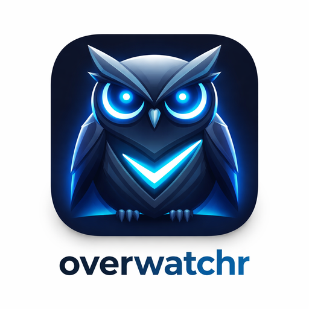
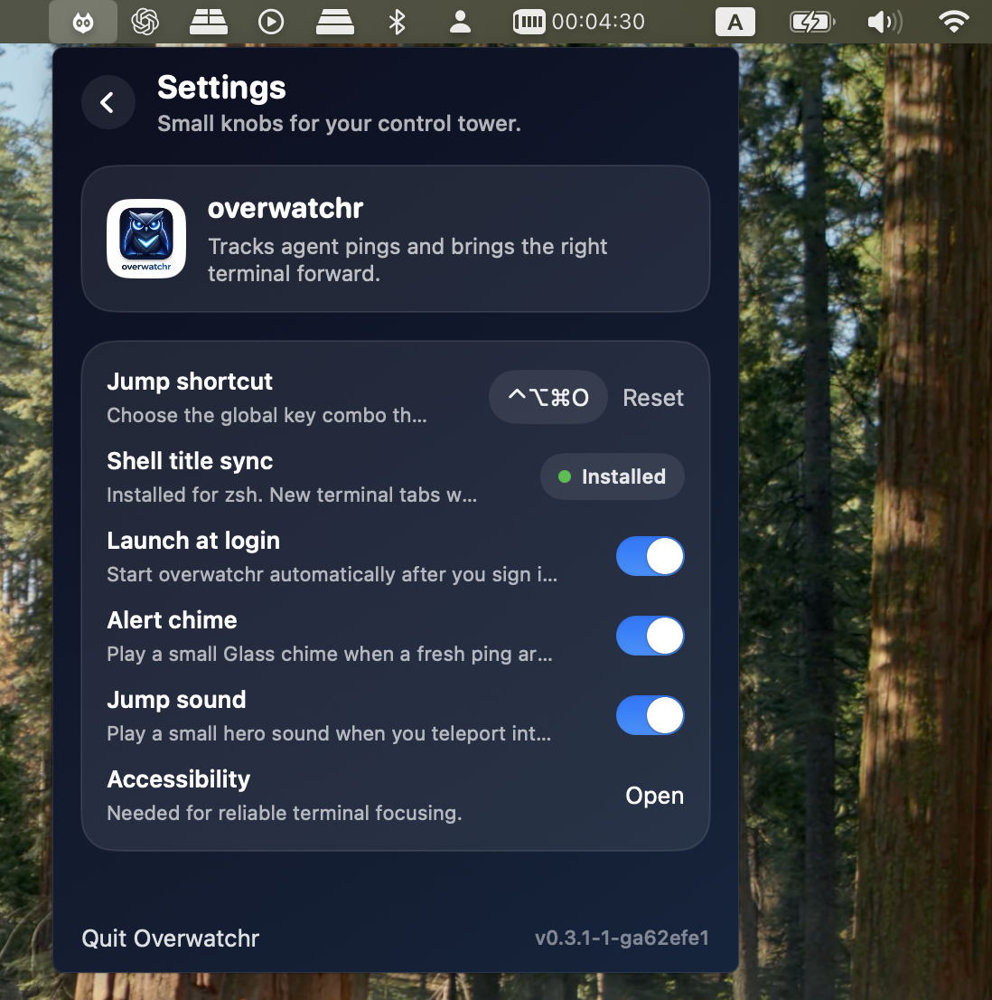
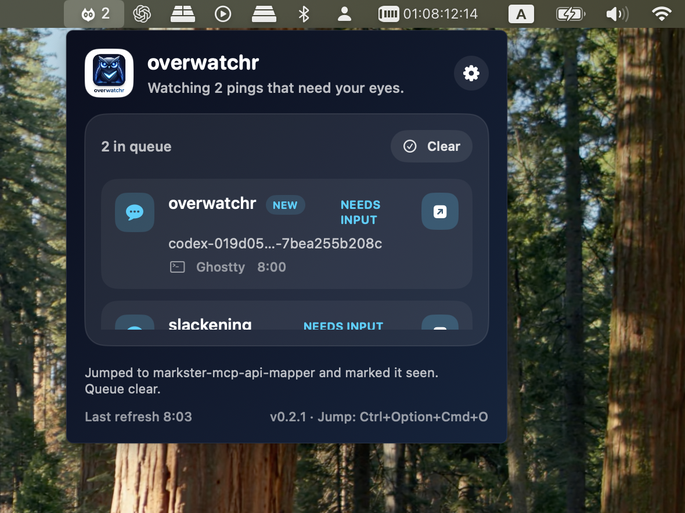

Hooks emit local events
Codex, Claude Code, and OpenCode write append-only JSONL events into ~/.overwatchr/events.jsonl.

overwatchroverwatchr watches Codex, Claude Code, and OpenCode, quietly queues the sessions that need you, and lets you jump back to the right terminal tab with one shortcut when you are ready.
Best on Ghostty, iTerm, and Terminal.app. Hooks install in one command. No Electron, no Hammerspoon, no tmux required.
curl -fsSL https://raw.githubusercontent.com/atiti/overwatchr/main/install.sh | bash
Installs the CLI and menu bar app. Optional hooks for Codex, Claude Code, and OpenCode are one command away.


• Waited for background terminal
• Running Stop hook: notifying overwatchr
Stop hook (completed)
$ overwatchr hooks install all --scope user
Installed codex hooks (user)
Installed claude hooks (user)
Installed opencode hooks (user)
$ Ctrl+Opt+Cmd+O
Jumped to markster-mcp-api-mapper · ttys099 and marked it seen.Overwatchr is deliberately small: an agent finishes, the queue updates, and when you are ready, one shortcut takes you back to the right terminal. That is the product loop.
An agent stops or needs input. A local hook writes an event.
The menu bar quietly shows the alert instead of hijacking your focus.
You press the jump shortcut and land back in the right tab.
• Running Stop hook: notifying overwatchr
Stop hook (completed)
$ Ctrl+Opt+Cmd+O
Jumped to slackening · ttys101When several agents are running at once, the real problem is staying focused on your current task while still noticing when another terminal needs you. overwatchr keeps those pings quiet, visible, and easy to act on: one queue, one shortcut, and a fast jump back to the right tab when you are ready.
Codex, Claude Code, and OpenCode write append-only JSONL events into ~/.overwatchr/events.jsonl.
Fresh alerts stack in one native menu bar widget, with seen-state, jump feedback, sounds, and a configurable global shortcut.
Overwatchr focuses the right Ghostty, iTerm, or Terminal tab using native macOS APIs plus terminal-specific matching.
The design goal is not “more notifications.” It is quiet confidence: a small control tower for AI-heavy terminal workflows, with fewer false positives, fewer lost tabs, and less background cognitive drag.
Swift, SwiftUI, AppKit, AppleScript, Accessibility APIs. No runtime dependency maze.
MIT licensed, GitHub-first, easy to audit, easy to adapt, and built to work with terminals you already use.
Frontmost sessions auto-suppress redundant alerts, active queues are deduped, and event logs stay inspectable.
No dashboard detour. No giant window. No setup maze. The experience lives in the menu bar and stays out of your way until it matters.
Install the app, grant Accessibility, install hooks, and let your agent swarm get loud only when it actually matters.
Run the one-line installer.
Launch Overwatchr and enable Accessibility.
Run overwatchr hooks install all --scope user.
Yes, if you use Ghostty, iTerm, or Terminal.app. Overwatchr is designed to sit on top of the terminals you already use, not replace them.
No. Overwatchr uses native macOS APIs and local JSONL events. No Electron shell, no Hammerspoon dependency, no tmux requirement.
That permission lets Overwatchr focus the correct terminal tab or window when you jump from the queue.
No. Codex is supported, but the hook bridge also supports Claude Code and OpenCode, and the local event format stays simple by design.